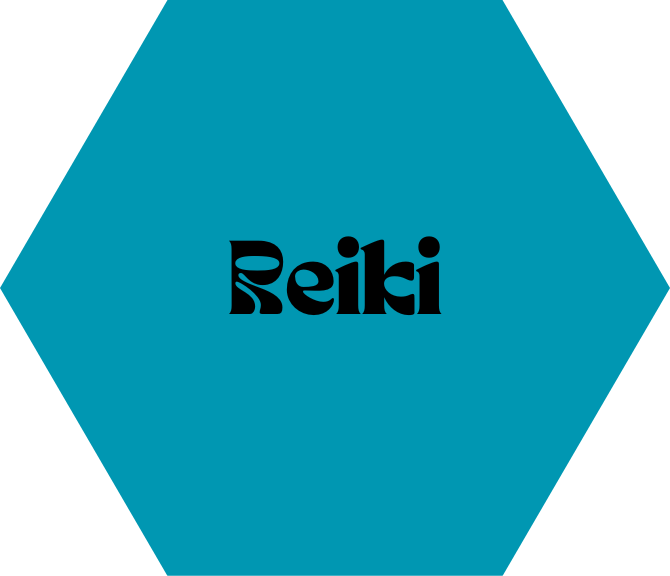

Técnica que nos permite ver el libro que lleva los registros del alma de quien consulta.
Terapia basada en el uso de 38 remedios naturales derivados de esencias florales con propiedades curativas.


Herramienta de acceso a la conciencia para lograr estar más presente en tu vida y tener más conciancia del ser.
Terapia energética aplicada a través de las manos. Reconocida por la OMS, se puede practicar en todos los seres.
Interpretación básica de la carta natal del consultante.